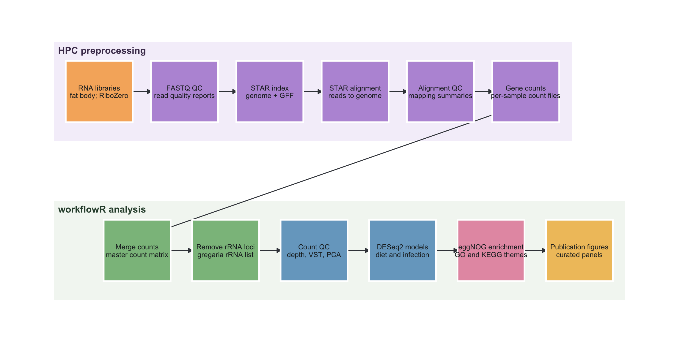

Last updated: 2026-08-10
Checks: 7 0
Knit directory:
gregaria-diet-infection-interaction/
This reproducible R Markdown analysis was created with workflowr (version 1.7.2). The Checks tab describes the reproducibility checks that were applied when the results were created. The Past versions tab lists the development history.
Great! Since the R Markdown file has been committed to the Git repository, you know the exact version of the code that produced these results.
Great job! The global environment was empty. Objects defined in the global environment can affect the analysis in your R Markdown file in unknown ways. For reproduciblity it’s best to always run the code in an empty environment.
The command set.seed(20260427) was run prior to running
the code in the R Markdown file. Setting a seed ensures that any results
that rely on randomness, e.g. subsampling or permutations, are
reproducible.
Great job! Recording the operating system, R version, and package versions is critical for reproducibility.
Nice! There were no cached chunks for this analysis, so you can be confident that you successfully produced the results during this run.
Great job! Using relative paths to the files within your workflowr project makes it easier to run your code on other machines.
Great! You are using Git for version control. Tracking code development and connecting the code version to the results is critical for reproducibility.
The results in this page were generated with repository version bdea9ec. See the Past versions tab to see a history of the changes made to the R Markdown and HTML files.
Note that you need to be careful to ensure that all relevant files for
the analysis have been committed to Git prior to generating the results
(you can use wflow_publish or
wflow_git_commit). workflowr only checks the R Markdown
file, but you know if there are other scripts or data files that it
depends on. Below is the status of the Git repository when the results
were generated:
Ignored files:
Ignored: .DS_Store
Ignored: analysis/.Rhistory
Ignored: analysis/output/
Ignored: code/R_timecourse_reference/
Ignored: code/scripts/__pycache__/
Ignored: data/.DS_Store
Ignored: data/raw_read_counts/DESeq2_output/overlap_DEGs/
Ignored: data/reference/
Ignored: manuscript/revisions/.DS_Store
Ignored: output/.DS_Store
Ignored: output/archive/rmd_runs_20260809_navigation_cleanup/curated-target-gene-figure_20260808-001351/
Ignored: output/rmd_runs/
Ignored: output/runs/
Ignored: outputs/.DS_Store
Ignored: scripts/.RData
Ignored: scripts/.Rhistory
Ignored: scripts/manuscript/__pycache__/
Untracked files:
Untracked: manuscript/revisions/20260810_methods_results_latest_analysis_audit/
Untracked: output/archive/rmd_runs_20260809_navigation_cleanup/exon-only-deseq2-analysis_20260808-020715/placed_unplaced_all_deseq2_results.csv
Untracked: output/archive/rmd_runs_20260809_navigation_cleanup/exon-only-deseq2-analysis_20260808-022116/placed_unplaced_all_deseq2_results.csv
Untracked: output/archive/rmd_runs_20260809_navigation_cleanup/placed-unplaced-scaffold-analysis_20260806-010555/placed_unplaced_all_deseq2_results.csv
Untracked: scripts/manuscript/build_methods_results_audit_20260810.py
Unstaged changes:
Modified: analysis/03-count-qc-exploration.Rmd
Note that any generated files, e.g. HTML, png, CSS, etc., are not included in this status report because it is ok for generated content to have uncommitted changes.
These are the previous versions of the repository in which changes were
made to the R Markdown
(analysis/02-workflow-reproducibility.Rmd) and HTML
(docs/02-workflow-reproducibility.html) files. If you’ve
configured a remote Git repository (see ?wflow_git_remote),
click on the hyperlinks in the table below to view the files as they
were in that past version.
| File | Version | Author | Date | Message |
|---|---|---|---|---|
| Rmd | 20984df | Maeva TECHER | 2026-08-10 | remove 1044 as bad mapping |
| html | 20984df | Maeva TECHER | 2026-08-10 | remove 1044 as bad mapping |
| Rmd | 8b8101c | Maeva TECHER | 2026-08-09 | fixing sample misassignement and missing library |
| html | 8b8101c | Maeva TECHER | 2026-08-09 | fixing sample misassignement and missing library |
| html | 0942a37 | Maeva TECHER | 2026-08-07 | update publication |
| Rmd | 9779d0d | Maeva TECHER | 2026-08-06 | reformat the pages |
| html | 9779d0d | Maeva TECHER | 2026-08-06 | reformat the pages |
| html | 5ebe940 | Maeva TECHER | 2026-08-06 | changes analysis |
| html | 1b24ec2 | Maeva TECHER | 2026-07-16 | adding phase related changes |
| html | bceb79b | Maeva TECHER | 2026-07-04 | update outliers removal |
| html | fb64139 | Maeva TECHER | 2026-07-03 | fixed the repo broken link |
| Rmd | 4de8698 | Maeva TECHER | 2026-07-03 | update html |
| html | 4de8698 | Maeva TECHER | 2026-07-03 | update html |
| Rmd | 4ef2181 | Maeva TECHER | 2026-07-03 | Upgrading analysis and figures DEGs |
| html | 4ef2181 | Maeva TECHER | 2026-07-03 | Upgrading analysis and figures DEGs |
Step 1 - Process reads
Follow fastp, STAR, and competitive host-pathogen mapping on the HPC.
Step 2 - Count genes twice
Use -t transcript,exon -g gene_id for the primary
analysis and -t exon -g gene_id for the matched sensitivity
analysis.
Step 3 - Reproduce reports
Run the visible R Markdown code into new timestamped output folders.
This page is the reproducibility map for the project. It explains where inputs live, where new results are written, and how to rerun the workflowR pages without relying on hidden helper scripts.
Both count definitions use the same frozen 44-library analysis cohort
and corrected metadata. Sample 1024 is infected diet 33;
library 1044 was processed and retained in the QC audit but
excluded from biological models. The two branches differ only in which
annotation feature types are counted, so their DEG results can be
compared directly.
knitr::opts_chunk$set(message = FALSE, warning = FALSE)
project_dir <- normalizePath(".", mustWork = TRUE)
run_stamp <- format(Sys.time(), "%Y%m%d-%H%M%S")
out_dir <- file.path(project_dir, "output", "rmd_runs",
paste(params$output_tag, run_stamp, sep = "_"))
dir.create(out_dir, recursive = TRUE, showWarnings = FALSE)layout <- data.frame(
folder = c("analysis/", "data/metadata/", "data/raw_read_counts/",
"data/reference/", "docs/", "output/rmd_runs/", "scripts/"),
role = c(
"workflowR R Markdown pages; new analysis code should live here",
"sample metadata used to align counts with biological groups",
"raw and merged gene count tables",
"reference annotation files",
"rendered workflowR website and committed visual assets",
"fresh output folders created by each Rmd render",
"legacy standalone scripts retained for provenance"
)
)
knitr::kable(layout)| folder | role |
|---|---|
| analysis/ | workflowR R Markdown pages; new analysis code should live here |
| data/metadata/ | sample metadata used to align counts with biological groups |
| data/raw_read_counts/ | raw and merged gene count tables |
| data/reference/ | reference annotation files |
| docs/ | rendered workflowR website and committed visual assets |
| output/rmd_runs/ | fresh output folders created by each Rmd render |
| scripts/ | legacy standalone scripts retained for provenance |
This project starts from gene-level count files that were produced upstream on the HPC. The diagram below separates the HPC preprocessing steps from the workflowR analyses in this repository, so it is clear which part maps reads to the Schistocerca gregaria reference and which part tests diet, infection, and diet-by-infection expression patterns.
library(ggplot2)
library(grid)
workflow_nodes <- data.frame(
id = c(
"libraries", "fastq_qc", "star_index", "star_align", "align_qc",
"gene_counts", "merge_counts", "remove_rrna", "count_qc",
"deseq2", "annotation", "figures"
),
lane = c(rep("HPC preprocessing", 6), rep("workflowR analysis", 6)),
x = c(1, 2.35, 3.7, 5.05, 6.4, 7.75, 1.6, 3.0, 4.4, 5.8, 7.2, 8.6),
y = c(rep(2.35, 6), rep(0.85, 6)),
title = c(
"RNA libraries", "FASTQ QC", "STAR index", "STAR alignment",
"Alignment QC", "Gene counts", "Merge counts", "Remove rRNA loci",
"Count QC", "DESeq2 models", "eggNOG enrichment", "Publication figures"
),
detail = c(
"fat body; RiboZero", "read quality reports",
"genome + GFF", "reads to genome",
"mapping summaries", "transcript + exon primary; exon sensitivity",
"master count matrix", "gregaria rRNA list",
"depth, VST, PCA", "diet and infection",
"GO and KEGG themes", "curated panels"
),
group = c(
"wet_lab", "hpc", "hpc", "hpc", "hpc", "hpc",
"data", "data", "analysis", "analysis", "annotation", "figures"
),
stringsAsFactors = FALSE
)
workflow_nodes$label <- paste0(workflow_nodes$title, "\n", workflow_nodes$detail)
workflow_edges <- data.frame(
from = c(
"libraries", "fastq_qc", "star_index", "star_align", "align_qc",
"gene_counts", "merge_counts", "remove_rrna", "count_qc",
"deseq2", "annotation"
),
to = c(
"fastq_qc", "star_index", "star_align", "align_qc", "gene_counts",
"merge_counts", "remove_rrna", "count_qc", "deseq2",
"annotation", "figures"
),
stringsAsFactors = FALSE
)
edge_df <- merge(workflow_edges, workflow_nodes[, c("id", "x", "y")],
by.x = "from", by.y = "id")
edge_df <- merge(edge_df, workflow_nodes[, c("id", "x", "y")],
by.x = "to", by.y = "id", suffixes = c("_from", "_to"))
node_width <- 1.06
node_height <- 0.58
p_workflow <- ggplot() +
annotate("rect", xmin = 0.28, xmax = 8.48, ymin = 1.88, ymax = 2.82,
fill = "#F5F0FA", color = NA) +
annotate("rect", xmin = 0.28, xmax = 9.32, ymin = 0.38, ymax = 1.32,
fill = "#F3F7F2", color = NA) +
annotate("text", x = 0.35, y = 2.74, label = "HPC preprocessing",
hjust = 0, size = 4.2, fontface = "bold", color = "#4B3A5A") +
annotate("text", x = 0.35, y = 1.24, label = "workflowR analysis",
hjust = 0, size = 4.2, fontface = "bold", color = "#2F4C39") +
geom_segment(
data = edge_df,
aes(x = x_from + node_width / 2, y = y_from,
xend = x_to - node_width / 2, yend = y_to),
arrow = arrow(length = unit(0.18, "cm"), type = "closed"),
linewidth = 0.55,
lineend = "round",
color = "#3D4148"
) +
geom_rect(
data = workflow_nodes,
aes(xmin = x - node_width / 2, xmax = x + node_width / 2,
ymin = y - node_height / 2, ymax = y + node_height / 2,
fill = group),
color = "white",
linewidth = 1
) +
geom_text(
data = workflow_nodes,
aes(x = x, y = y, label = label),
size = 3.15,
lineheight = 0.9,
color = "#1F2528"
) +
scale_fill_manual(values = c(
wet_lab = "#F6B26B",
hpc = "#B998D9",
data = "#8BBE8B",
analysis = "#77A7C8",
annotation = "#E59BB1",
figures = "#F0C36A"
)) +
coord_cartesian(xlim = c(0.15, 9.55), ylim = c(0.2, 3.0), clip = "off") +
theme_void() +
theme(legend.position = "none",
plot.margin = margin(10, 20, 10, 20))
p_workflow
ggsave(file.path(out_dir, "hpc_to_workflowr_workflow.png"),
p_workflow, width = 12, height = 6, dpi = 300)The important handoff for this repository is the count matrix. STAR
produces the alignments and featureCounts assigns paired fragments with
-t transcript,exon -g gene_id. The workflowR pages then
merge and check those counts, remove the loci listed in
gregaria_rrna_list.txt, and use the rRNA-filtered matrix
for QC, differential expression, annotation enrichment, and publication
figures.
Run these commands from the repository root. Each rendered analysis
page makes a new timestamped folder under
output/rmd_runs/.
# Render one page after editing its parameters.
Rscript -e 'workflowr::wflow_build("analysis/03-count-qc-exploration.Rmd")'
# Render the main manuscript-oriented pages.
Rscript -e 'workflowr::wflow_build(c(
"analysis/01-study-design-data.Rmd",
"analysis/02-workflow-reproducibility.Rmd",
"analysis/03-count-qc-exploration.Rmd",
"analysis/04-deseq2-interaction-model.Rmd",
"analysis/05-diet-pairwise-deg.Rmd",
"analysis/06-infection-within-diet-deg.Rmd",
"analysis/07-deg-overlap-prioritization.Rmd",
"analysis/08-publication-figures.Rmd"
))'
# Preview the workflowR status before publishing.
Rscript -e 'workflowr::wflow_status()'packages <- c(
"workflowr", "knitr", "rmarkdown", "ggplot2", "scales",
"DESeq2", "pheatmap", "ggrepel", "EnhancedVolcano", "UpSetR"
)
package_status <- data.frame(
package = packages,
installed = vapply(packages, requireNamespace, logical(1), quietly = TRUE)
)
knitr::kable(package_status)| package | installed | |
|---|---|---|
| workflowr | workflowr | TRUE |
| knitr | knitr | TRUE |
| rmarkdown | rmarkdown | TRUE |
| ggplot2 | ggplot2 | TRUE |
| scales | scales | TRUE |
| DESeq2 | DESeq2 | TRUE |
| pheatmap | pheatmap | TRUE |
| ggrepel | ggrepel | TRUE |
| EnhancedVolcano | EnhancedVolcano | TRUE |
| UpSetR | UpSetR | TRUE |
write.csv(package_status, file.path(out_dir, "package_status.csv"),
row.names = FALSE)The current analysis pages follow this pattern:
params.output/rmd_runs/.sessionInfo() in the same folder as the
results.This keeps the manuscript figures reproducible while leaving the older scripts available for comparison.
writeLines(capture.output(sessionInfo()),
file.path(out_dir, "sessionInfo.txt"))
sessionInfo()R version 4.6.0 (2026-04-24)
Platform: aarch64-apple-darwin23
Running under: macOS Tahoe 26.6.1
Matrix products: default
BLAS: /Library/Frameworks/R.framework/Versions/4.6/Resources/lib/libRblas.0.dylib
LAPACK: /Library/Frameworks/R.framework/Versions/4.6/Resources/lib/libRlapack.dylib; LAPACK version 3.12.1
locale:
[1] C.UTF-8/C.UTF-8/C.UTF-8/C/C.UTF-8/C.UTF-8
time zone: Asia/Tokyo
tzcode source: internal
attached base packages:
[1] grid stats graphics grDevices utils datasets methods
[8] base
other attached packages:
[1] ggplot2_4.0.3 workflowr_1.7.2
loaded via a namespace (and not attached):
[1] SummarizedExperiment_1.42.0 gtable_0.3.6
[3] xfun_0.57 bslib_0.10.0
[5] ggrepel_0.9.8 processx_3.9.0
[7] lattice_0.22-9 Biobase_2.72.0
[9] callr_3.7.6 vctrs_0.7.3
[11] tools_4.6.0 generics_0.1.4
[13] stats4_4.6.0 parallel_4.6.0
[15] tibble_3.3.1 pkgconfig_2.0.3
[17] pheatmap_1.0.13 Matrix_1.7-5
[19] RColorBrewer_1.1-3 EnhancedVolcano_1.30.0
[21] S7_0.2.2 S4Vectors_0.50.1
[23] lifecycle_1.0.5 compiler_4.6.0
[25] farver_2.1.2 stringr_1.6.0
[27] git2r_0.36.2 textshaping_1.0.5
[29] DESeq2_1.52.0 getPass_0.2-4
[31] Seqinfo_1.2.0 codetools_0.2-20
[33] httpuv_1.6.17 htmltools_0.5.9
[35] sass_0.4.10 yaml_2.3.12
[37] later_1.4.8 pillar_1.11.1
[39] jquerylib_0.1.4 whisker_0.4.1
[41] BiocParallel_1.46.0 DelayedArray_0.38.1
[43] cachem_1.1.0 abind_1.4-8
[45] locfit_1.5-9.12 tidyselect_1.2.1
[47] digest_0.6.39 stringi_1.8.7
[49] dplyr_1.2.1 labeling_0.4.3
[51] rprojroot_2.1.1 fastmap_1.2.0
[53] SparseArray_1.12.2 cli_3.6.6
[55] magrittr_2.0.5 S4Arrays_1.12.0
[57] dichromat_2.0-0.1 withr_3.0.2
[59] scales_1.4.0 promises_1.5.0
[61] XVector_0.52.0 rmarkdown_2.31
[63] httr_1.4.8 matrixStats_1.5.0
[65] otel_0.2.0 gridExtra_2.3
[67] ragg_1.5.2 evaluate_1.0.5
[69] UpSetR_1.4.0 knitr_1.51
[71] GenomicRanges_1.64.0 IRanges_2.46.0
[73] rlang_1.2.0 Rcpp_1.1.1-1.1
[75] glue_1.8.1 BiocGenerics_0.58.0
[77] rstudioapi_0.18.0 jsonlite_2.0.0
[79] plyr_1.8.9 R6_2.6.1
[81] MatrixGenerics_1.24.0 systemfonts_1.3.2
[83] fs_2.1.0
sessionInfo()R version 4.6.0 (2026-04-24)
Platform: aarch64-apple-darwin23
Running under: macOS Tahoe 26.6.1
Matrix products: default
BLAS: /Library/Frameworks/R.framework/Versions/4.6/Resources/lib/libRblas.0.dylib
LAPACK: /Library/Frameworks/R.framework/Versions/4.6/Resources/lib/libRlapack.dylib; LAPACK version 3.12.1
locale:
[1] C.UTF-8/C.UTF-8/C.UTF-8/C/C.UTF-8/C.UTF-8
time zone: Asia/Tokyo
tzcode source: internal
attached base packages:
[1] grid stats graphics grDevices utils datasets methods
[8] base
other attached packages:
[1] ggplot2_4.0.3 workflowr_1.7.2
loaded via a namespace (and not attached):
[1] SummarizedExperiment_1.42.0 gtable_0.3.6
[3] xfun_0.57 bslib_0.10.0
[5] ggrepel_0.9.8 processx_3.9.0
[7] lattice_0.22-9 Biobase_2.72.0
[9] callr_3.7.6 vctrs_0.7.3
[11] tools_4.6.0 generics_0.1.4
[13] stats4_4.6.0 parallel_4.6.0
[15] tibble_3.3.1 pkgconfig_2.0.3
[17] pheatmap_1.0.13 Matrix_1.7-5
[19] RColorBrewer_1.1-3 EnhancedVolcano_1.30.0
[21] S7_0.2.2 S4Vectors_0.50.1
[23] lifecycle_1.0.5 compiler_4.6.0
[25] farver_2.1.2 stringr_1.6.0
[27] git2r_0.36.2 textshaping_1.0.5
[29] DESeq2_1.52.0 getPass_0.2-4
[31] Seqinfo_1.2.0 codetools_0.2-20
[33] httpuv_1.6.17 htmltools_0.5.9
[35] sass_0.4.10 yaml_2.3.12
[37] later_1.4.8 pillar_1.11.1
[39] jquerylib_0.1.4 whisker_0.4.1
[41] BiocParallel_1.46.0 DelayedArray_0.38.1
[43] cachem_1.1.0 abind_1.4-8
[45] locfit_1.5-9.12 tidyselect_1.2.1
[47] digest_0.6.39 stringi_1.8.7
[49] dplyr_1.2.1 labeling_0.4.3
[51] rprojroot_2.1.1 fastmap_1.2.0
[53] SparseArray_1.12.2 cli_3.6.6
[55] magrittr_2.0.5 S4Arrays_1.12.0
[57] dichromat_2.0-0.1 withr_3.0.2
[59] scales_1.4.0 promises_1.5.0
[61] XVector_0.52.0 rmarkdown_2.31
[63] httr_1.4.8 matrixStats_1.5.0
[65] otel_0.2.0 gridExtra_2.3
[67] ragg_1.5.2 evaluate_1.0.5
[69] UpSetR_1.4.0 knitr_1.51
[71] GenomicRanges_1.64.0 IRanges_2.46.0
[73] rlang_1.2.0 Rcpp_1.1.1-1.1
[75] glue_1.8.1 BiocGenerics_0.58.0
[77] rstudioapi_0.18.0 jsonlite_2.0.0
[79] plyr_1.8.9 R6_2.6.1
[81] MatrixGenerics_1.24.0 systemfonts_1.3.2
[83] fs_2.1.0